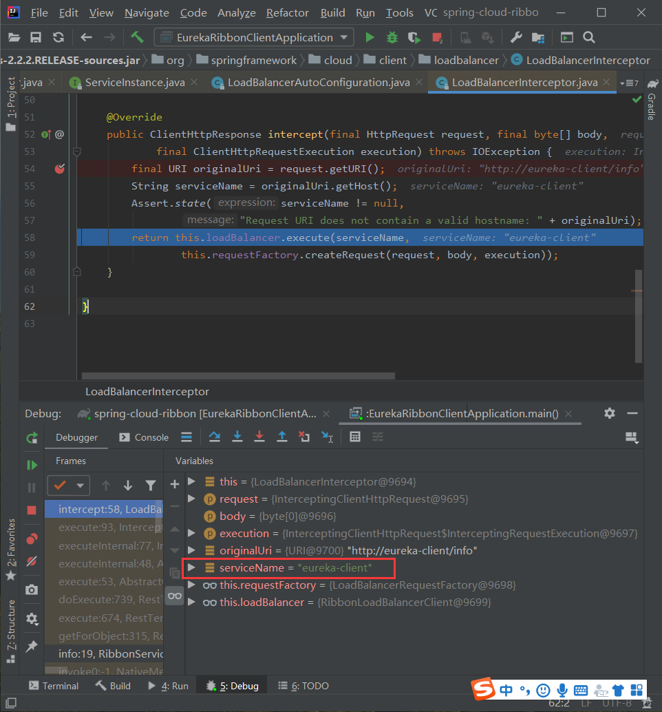
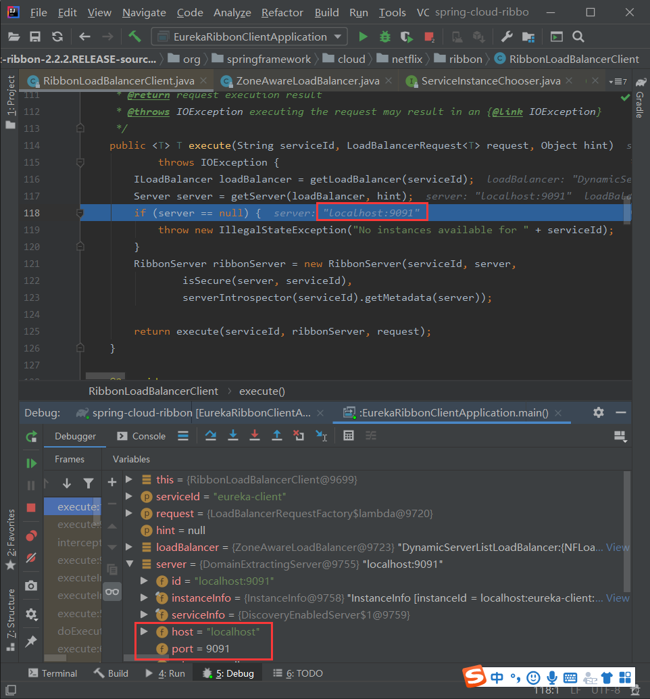
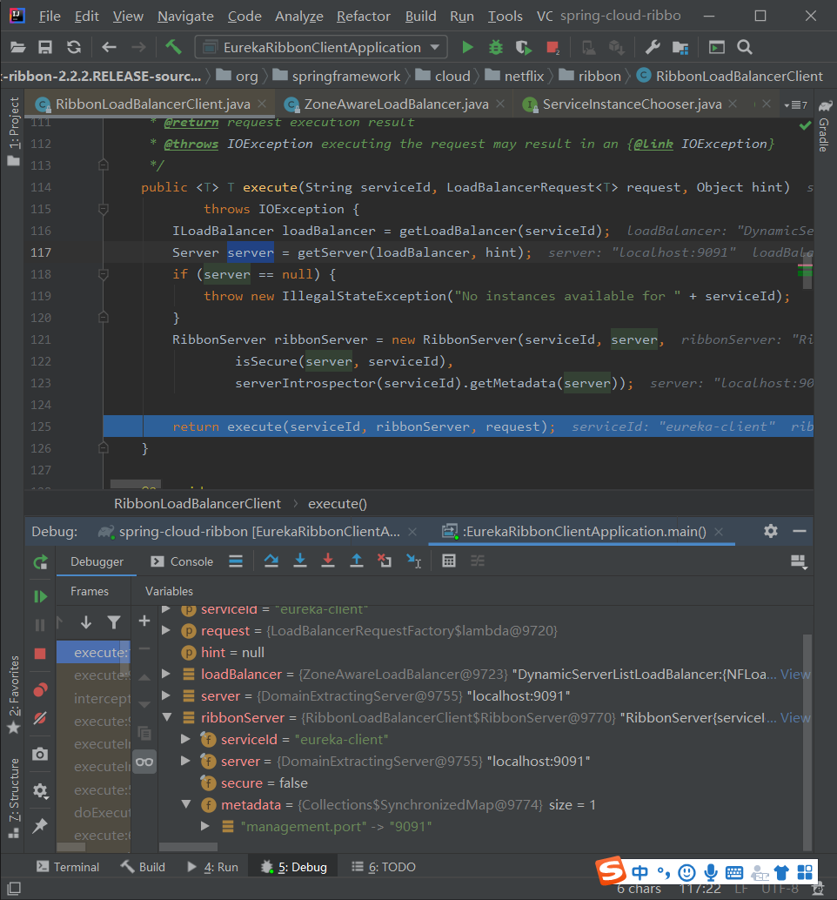
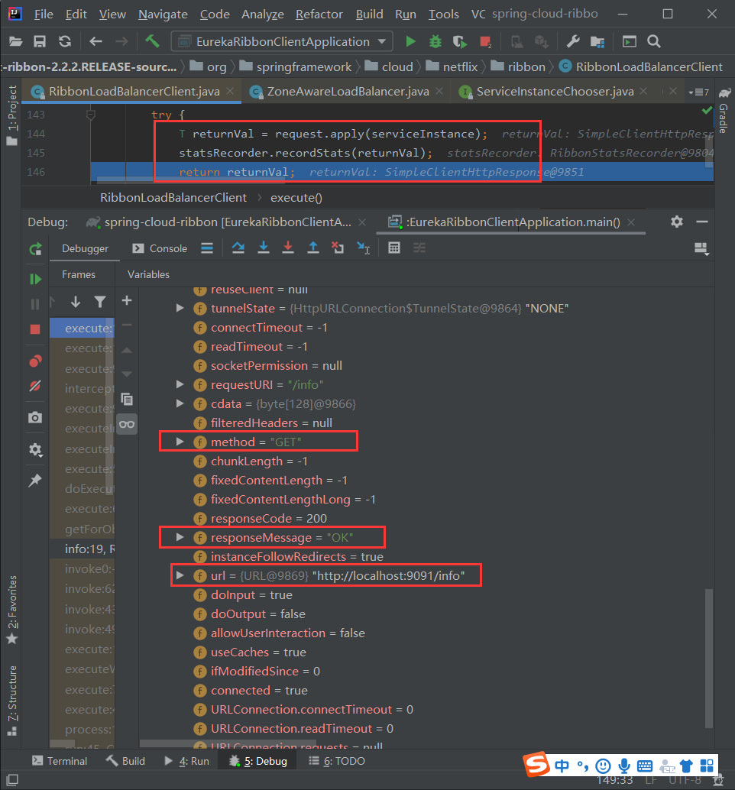
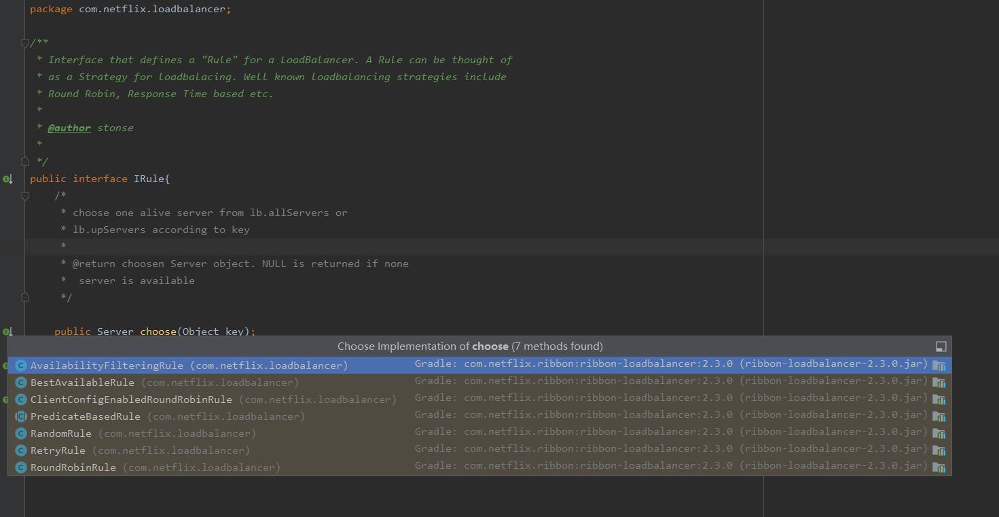

ribbon
- 负载均衡的框架
- 支持多种协议，如http、tcp等
- 提供负载均衡客户端
jar包
Gradle: com.netflix.ribbon:ribbon:2.3.0 外壳
Gradle: com.netflix.ribbon:ribbon-core:2.3.0 核心包
Gradle: com.netflix.ribbon:ribbon-eureka:2.3.0 和eureka的继承
Gradle: com.netflix.ribbon:ribbon-httpclient:2.3.0 http客户端
Gradle: com.netflix.ribbon:ribbon-loadbalancer:2.3.0 负载均衡器
Gradle: com.netflix.ribbon:ribbon-transport:2.3.0 其他协议的支持
负载均衡器组件
- 一个负载均衡器，至少提供以下功能
- 要维护各个服务器的ip等信息
- 根据特定逻辑选取服务器
- 为了实现基本的负载均衡功能，ribbon的负载均衡有三大子模块
- rule
- ping（心跳）
- serverList
内置负载均衡规则
- RoundRobinRule
- AvailabilityFilterRule
- WeightResponseTimeRule
- ZoneAvoidanceRule
- BestAvailableRule
- RandomRule
- RetryRule
ribbon的两种使用方式
- 与RestTemplate结合使用
- 与Feign结合使用
LoadBalanceerClient
- LoadBalanceClient是负载均衡器的核心类，他可以通过eureka-client获取到负载 均衡服务提供者的实例信息，，并将服务注册列表信息缓存一份，从而实现了客户端的负载均衡。
Ribbon实现负载均衡原理
Ribbon的负载均衡主要是通过LoadBalanceClient来实现的，而LoadBalanceClient具体交给了ILoadBalance来处理，IloadBalance通过配置IRule，IPing等，想Eureka Client获取注册列表信息，默认每秒想Eureka Client发送一次【ping】，进而检查是否需要更新服务的注册列表信息。最后，在得到服务注册列表信息后，ILoadBalance根据IRULE的策略进行负载均衡。
Ribbon实现负载均衡的原理
- RestTemplate增加@LoadBalance注解后，再进行远程调度时能够做到负载均衡，主要是维护了一个被@LoadBalance注解的RestTemplate列表，并给该列表中的RestTemplate对象添加了拦截器，在拦截器方法中，将远程调度方法教给了Ribbon的负载均衡器LoadBalanceClient去处理。从而实现了负载均衡的目的。
LoadBalanced注解
Annotation to mark a RestTemplate or WebClient bean to be configured to use a LoadBalancerClient.
标示RestTemplate或者WebClient可以被配置，以被LoadBalancerClient使用
LoadBalancerAutoConfiguration
Auto-configuration for Ribbon (client-side load balancing).
为Ribbon自动配置使用，负载均衡的装配
1 | @Configuration(proxyBeanMethods = false) |
ConditionalOnClass和ConditionalOnBean完成LoadBalancerAutoConfiguration的加载，即RestTemplate在classpath下边能找到，
并且LoadBalancerClient实例存在才会加载LoadBalancerAutoConfiguration。
LoadBalancerInterceptor拦截器
LoadBalancerInterceptor存在LoadBalancerAutoConfiguration当中。
1 | public class LoadBalancerInterceptor implements ClientHttpRequestInterceptor { |
this.loadBalancer.execute调用了LoadBalancerClient的execute方法:
1
2
3
4
5
6
7
8
9
10
11
12
13
14
15
16
17
18
19
20
21
22
23
24
25 public interface LoadBalancerClient extends ServiceInstanceChooser {
/**
* Executes request using a ServiceInstance from the LoadBalancer for the specified
* service.
* @param serviceId The service ID to look up the LoadBalancer.
* @param request Allows implementations to execute pre and post actions, such as
* incrementing metrics.
* @param <T> type of the response
* @throws IOException in case of IO issues.
* @return The result of the LoadBalancerRequest callback on the selected
* ServiceInstance.
*/
主要完成具体请求的执行
<T> T execute(String serviceId, LoadBalancerRequest<T> request) throws IOException;
<T> T execute(String serviceId, ServiceInstance serviceInstance, LoadBalancerRequest<T> request) throws IOException;
// 重新构建uri
/*
* Creates a proper URI with a real host and port for systems to utilize. Some systems use a URI with the logical
* service name as the host, such as http://myservice/path/to/service. This will replace the service name with the *
* host:port from the ServiceInstance
*/
URI reconstructURI(ServiceInstance instance, URI original);
}
LoadBalancerClient实继承了ServiceInstanceChooser，ServiceInstanceChooser只有一个方法，就是选择一个实例，然后封装为ServiceInstance返回。
1
2
3
4
5
6
7
8
9
10public interface ServiceInstanceChooser {
/**
* Chooses a ServiceInstance from the LoadBalancer for the specified service.
* @param serviceId The service ID to look up the LoadBalancer.
* @return A ServiceInstance that matches the serviceId.
*/
ServiceInstance choose(String serviceId);
}
RibbonLoadBalancerClient
RibbonLoadBalancerClient是具体的执行execute方法的实现类。
bubug LoadBalancerInterceptor
我们在LoadBalancerInterceptor的intercept方法加一个断点，然后做一个请求:

进入RibbonLoadBalancerClient的execute如下：
1 | public <T> T execute(String serviceId, LoadBalancerRequest<T> request) |
继续往下走：
1 | //使用一个负载均衡规则选择一个ip |
最后返回的Server：

应用的名称转换为ip+端口的形式。
然后得到要调用的主机的一些元数据，以及是否是安全的等等数据。

最后执行真正的http调用返回结果：

IRule
Interface that defines a “Rule” for a LoadBalancer. A Rule can be thought of as a Strategy for loadbalacing. Well known loadbalancing strategies include Round Robin, Response Time based etc.
接口定义了负载均衡的规则。
1 | public interface IRule{ |
实现类

如果我们想指定使用某一个规则 怎么定义呢?
1 | @Configuration |
这样配置就会全局生效。